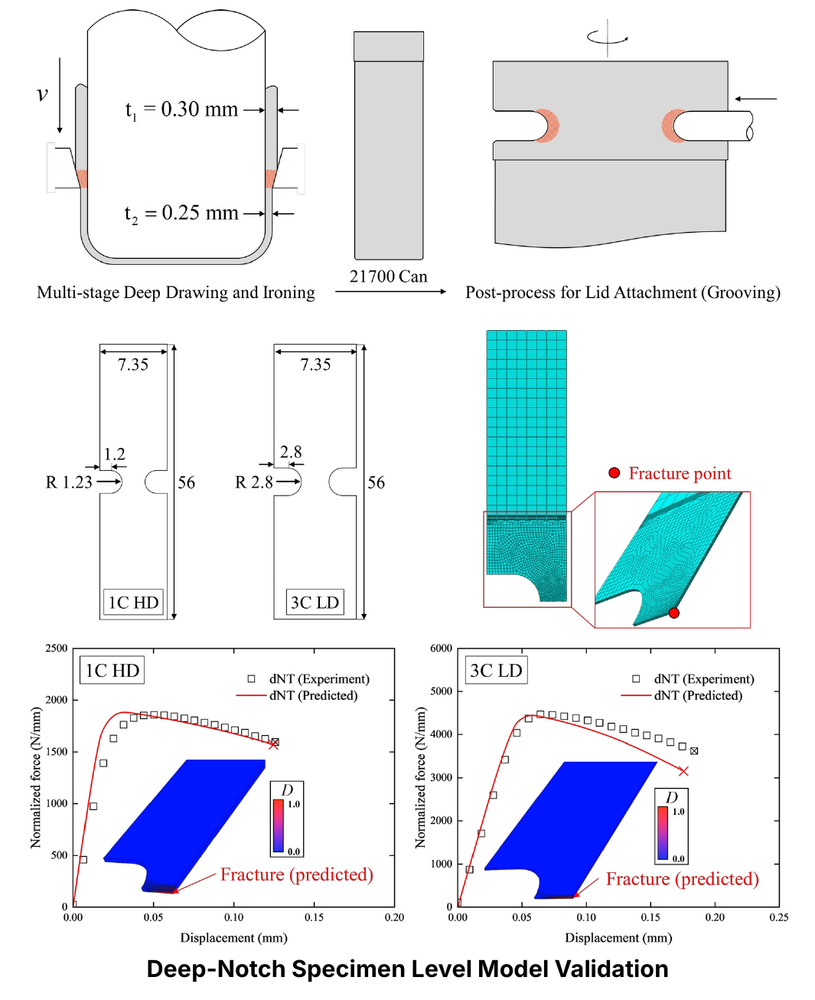
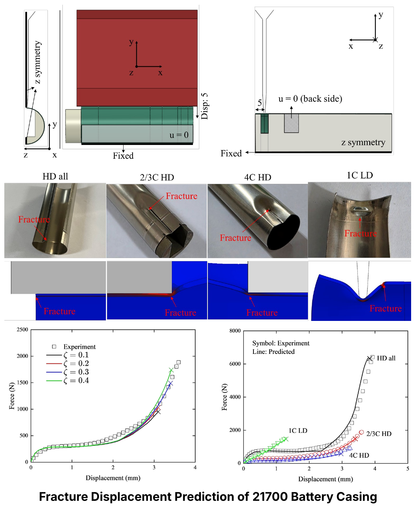

A numerical framework for battery-can materials that combines anisotropic plasticity and ductile fracture to predict structural integrity from deep drawing to final failure.
Thin-walled 21700 casings are made by multistage deep drawing and ironing. The non-uniform deformation history leaves the casing with microstructure, plastic anisotropy and fracture resistance that vary along its height. Quantifying this variation is needed to predict localized failure in later manufacturing and assembly steps.
Grain morphology and dislocation density differ between the non-ironed upper region and the ironed lower region, and the hoop and longitudinal directions behave differently. A single homogeneous material model cannot describe this. The question is how forming-induced heterogeneity affects anisotropic plasticity and ductile fracture, and how to model it at the structural level.
EBSD characterizes the microstructure, and purpose-designed miniature specimens measure properties at four axial locations in the hoop and longitudinal directions. The Hill 1948 yield criterion and the Hosford–Coulomb fracture model are calibrated separately for each location with a hybrid experimental–numerical procedure that uses digital image correlation and finite element simulation.


The models were validated with deep-notched specimens and a newly developed constrained V-bending test that induces fracture at prescribed locations and orientations. Simulations reproduced the measured force–displacement curves and fracture locations. The ironed region showed higher fracture resistance than the non-ironed region despite larger forming strains, which suggests that compressive stress during ironing closes voids.